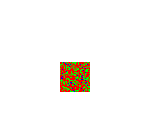
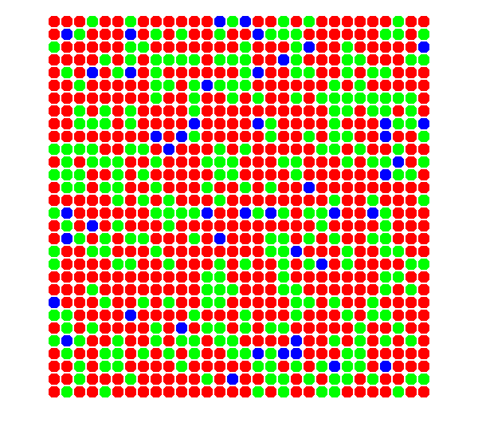
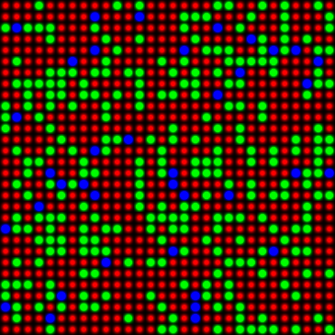
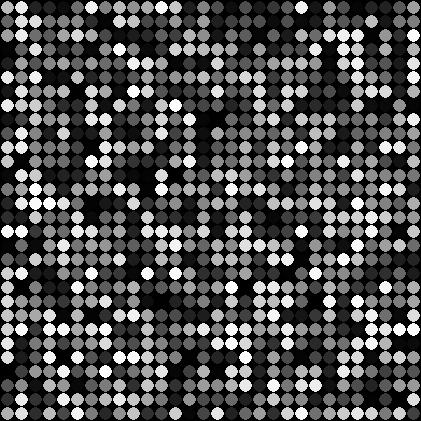
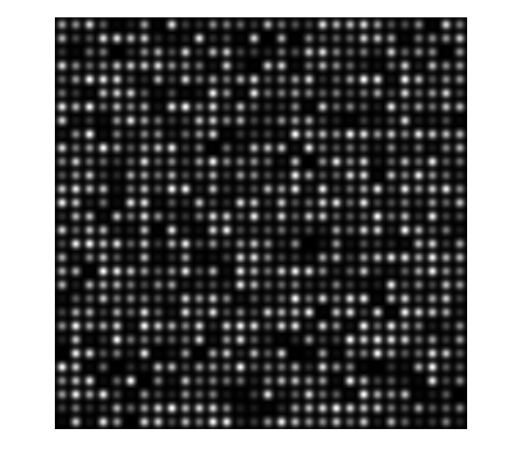

t_GenerateConeMosaicImage
Show how to make a nice viewable image of a cone mosaic, as well as an image representing the photon responses.
See also generateConeMosaicImage, generateConePhotonsImage.
NOTE: There are ways to produce these images using conePlot and coneSensorPlot, and this tutorial should show those so that it illustrates the usage we want to head for.
4/21/15 npc Wrote it. 4/22/15 dhb Tweaks for isetbio compatibility. 4/23/15 npc Minor fixes. 4/27/15 dhb Test photons image routine as well. 6/29/15 dhb Fix way we set up coneP to be more robust -- old less robust code got broken by some lower level change. dhb Made this a script, not a function. Friendlier for tutorials.
Contents
Clear
close all; clear global; ieInit;
Create human sensor to get a cfa
coneP = coneCreate('human'); coneP = coneSet(coneP,'spatial density',[0.0 0.625 0.325 .05]); sensor = sensorCreate('human',[],coneP); sensor = sensorSet(sensor, 'noise flag', 0); sensor = sensorSet(sensor,'exp time',2); sensor = sensorSet(sensor,'rows',128); sensor = sensorSet(sensor,'cols',128); pixel = sensorGet(sensor,'pixel'); pixel = pixelSet(pixel,'sizesamefillfactor',(200/120)*[1.5e-6 1.5e-6]); sensor = sensorSet(sensor,'pixel',pixel); coneCFAPattern = sensorGet(sensor,'cfa pattern');
Extract a reasonable size region
cfaSize = 30; coneCFAPattern = coneCFAPattern(1:cfaSize,1:cfaSize);
Make up some photon responses.
Here we are just testing that we can make a nice image, so we don't go to any trouble to make this realistic.
conePhotonResponses = 1e12*rand(size(coneCFAPattern));
Specify cone aperture size
coneSize = 15;
Generate the cone mosaic image
[coneMosaicStandardImage,coneCFARawImage] = generateConeMosaicImage(coneCFAPattern, coneSize, 'standard'); coneMosaicWRImage = generateConeMosaicImage(coneCFAPattern, coneSize, 'williams_roorda');
Generate the isomerizations map image
[conePhotonsStandardImage,conePhotonsRawImage] = generateConePhotonsImage(conePhotonResponses, coneSize, 'standard'); conePhotonsWRImage = generateConePhotonsImage(conePhotonResponses, coneSize, 'williams_roorda'); % Show the results h = figure(1); set(h, 'Name', 'raw cfa mosaic', 'Position', [10 10 100 100]); clf imshow(coneCFARawImage); h = figure(2); set(h, 'Name', 'standard style cone mosaic', 'Position', [400 400 100 100]); clf imshow(coneMosaicStandardImage); truesize; h = figure(3); set(h, 'Name', 'Williams/Roorda style cone mosaic', 'Position', [860 400 100 100]); clf imshow(coneMosaicWRImage); truesize; h = figure(4); set(h, 'Name', 'standard style isomerizations', 'Position', [400 400 100 100]); clf imshow(conePhotonsStandardImage); truesize; h = figure(5); set(h, 'Name', 'Williams/Roorda style isomerizations', 'Position', [860 400 100 100]); clf imshow(conePhotonsWRImage); truesize;    